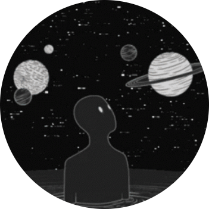

I bid you, Welcome
The future won't come for us. Never. Yet we must strive towards it. Always.

"Hey,"
You've seen that opener before. So let's get to it: I'm Andrew — and I build things that probably shouldn't belong in the same portfolio.
Code, systems, worlds, and the words that hold them together.
I'm Ukrainian and French, fluent across four languages — and passable in a fifth, though I wouldn't recommend it. Somewhere between the text editor and the worlds that don't exist yet, that tends to show up in the work.
This portfolio is the longer version.
Scroll down to see where that lands.
Right now I'm focused on the space where those disciplines actually overlap — where a system needs a story to make sense, or a story needs a system to hold its weight. Most people pick a lane. I've never been particularly good at that.
What I'm building toward is work that doesn't need a genre label. Games that read like literature. Narratives that function like architecture. Code that serves something larger than itself, while still having a self. In short, a vague reflection of what I embody.
The distinction, if there is one: I don't treat any of these as separate crafts. They inform and interlap each other constantly.
Their cross-contamination is usually where the most interesting work comes from, speaking from experience.
What I work with — grouped by category.
Selected work — shipped builds, active systems, and ongoing initiatives.
A physical-key execution platform: insert a drive, a world opens. A Tauri desktop app split into a Builder (React + Monaco visual editor, compile and signing pipeline) and a Runner that validates the drive's key and renders the Kernel as a fullscreen overlay isolated from the host — drive out, session gone, zero trace. Phase 1 shipped as v0.1.0 with 263 tests and CI, release and security workflows. Its enterprise tier, MitoData, comes later.
A language-agnostic installer runtime with a conversational terminal interface. Lodge reads a manifest that describes what a package is, works out where each file belongs on Windows, macOS or Linux, and runs the install live in a cabin-themed terminal UI. A bundled offline model understands plain-English commands like "do I have git?" — 5 crates, 172 tests.
A local-first, voice-first personal AI running entirely on my own hardware. An always-on low-power server handles fast triage with a small local LLM, semantic intent routing, live lookups and long-term RAG memory with nightly consolidation; a GPU rig takes the heavy inference. Self-hosted end to end, with a regression suite run after every rebuild.
A first-person vertical narrative survival game set after the Yellowstone supereruption of Labor Day 2039 reshapes Vancouver's atmosphere. Society splits by elevation, above or below a toxic gas cloud; the player leaves the fragile safety of a high-rise and travels upward. Unreal Engine 5.6, (semi-)diegetic UI. Project Director & Narrative Lead under KronStudios-Games.
A Backrooms-inspired first-person horror game by Null Concept, coming to Steam Early Access. 15 mapped levels planned at release, each with its own hazards and ambiance, and three predators — the Howler, the Hounds and the Duller. I shaped its lore, handled logistics and translation, and built its official website.
An AI-powered, controller-free motion tracking concept for AR/VR — computer vision plus RAG-enhanced prediction, no sensors, no controllers. I founded it, set the technical vision and built its public site before the venture shut down.
Independent initiatives and freelance work — no salaried employment, no pretence otherwise.
Grondia — Swiss campsite-management SaaS
Prepared and co-led a French-language remote sales call with the founder on 50 minutes' notice, tailoring the pitch to a ~100-pitch Swiss campsite — seasonal contracts, point of sale, CHF and TWINT payments, Swiss data hosting — and handling questions on pricing, migration and data location. The founder's verdict: "literally perfect." Then a full day representing Grondia on its stand at SETT 2026 in Montpellier, qualifying campsite operators and booking demos.
Expo — personal AI infrastructure
Designing and building a self-hosted personal AI across two machines: an always-on server running local LLM triage, intent routing, RAG memory and a chat interface, and a GPU rig for heavy inference. Docker Compose, Tailscale, llama.cpp, Qdrant and SQLite, with a regression suite and nightly self-evaluation.
Lodge
Built a Rust installer runtime with a natural-language terminal interface, a bundled offline model, OS placement rulesets for Windows, macOS and Linux, and an extension registry with automated validation. 5 crates, 172 tests, Apache-2.0.
PsyPunker
Sole architect and developer of a USB-bound cryptographic Kernel execution platform. Designed the full system architecture — signing pipeline, sandbox model, drive-identity binding, a 20-vector threat model — and built a TypeScript + Rust monorepo with Tauri, React, pnpm and Turborepo. Shipped Phase 1 as v0.1.0 (April 2026) with 263 tests and CI, release and security workflows.
KronStudios-Games — Above The Line
Co-founded and lead, as President, a volunteer revenue-share indie studio of about nine people producing Above The Line in Unreal Engine 5.6. Responsible for project direction, narrative design, lore architecture and team coordination. Set up phased milestones, a protected-branch PR workflow, STAR-based recruiting, a merit-weighted revenue-share agreement and a Quartz GDD wiki; built the studio website.
Null Concept — Monochromality
Joined early and shaped the game's direction with Backrooms lore frameworks drawn from the Wikidot canon. Cross-functional role across logistics, coordination, lore writing, gameplay oversight, partial voice acting and translation; built the official website. Stepped back over sustained deadline slips and diverging creative vision.
EveryMotion
Founded and led an AI-powered motion tracking startup concept targeting AR/VR. Defined the technical vision (computer vision, RAG-enhanced prediction), built the public-facing web presence, and managed the early team and product roadmap before the venture shut down.
REIU-V — SCP Roleplay Server
Founded and maintained an SCP-themed roleplay Discord community that grew to ~150 members during tenure and accelerated to 900+ after departure. Managed server infrastructure, community moderation, and narrative frameworks.
Independent · Backrooms Wikidot · REIU-V · Personal
Writing has run as a parallel thread across almost every initiative. The first serious application was the REIU-V community: original in-universe documents in clinical SCP format — technical protocols, anomalous research logs, consciousness-overwriting procedures — with a new batch written for its commemoration event in August 2025.
Active on the Backrooms Wikidot Feb–Aug 2025: published articles, collaborative pieces, and contest submissions including the Despair Writings contest. Most prominent published work: Level 360 ↗ "Halls of Past Screams" (+17).
From late 2025: novel and screenplay writing, both in progress. A Sound Sinner — a Tarantino-structured post-apocalyptic screenplay. Information Paradox — literary science fiction, quieter register. Running concurrently: the Above The Line prologue and story summary, the narrative foundation before a single line of code.
Subject To F.U.N (Fourth-Wall Understanding Network)
A KronStudios concept — a fourth-wall-breaking action puzzle thriller in the vein of Portal and The Stanley Parable. The title itself was a sarcastic joke built into the premise. Never reached a single line of production code. Revision 0.01 is the entire paper trail it left behind.
T||RUTHLESS — First KronStudios Initiative
Founded and directed the first KronStudios initiative: a narrative-driven UE5 shooter with a semi-free-choice storyline. The title — a deliberate dual-read: Ruthless on first glance, Truthless on closer inspection — embedded into the story of a soldier named Rad Bronx, uncovering a century-old government conspiracy through I.R.I.S. Project Manager and Head UE5 Developer across ~15 people. Never reached a playable build. The foundational leadership lesson that shaped everything after.
"Everything I make is an argument that these things belong together."
— Andrew Pie
Open to freelance, internships, and collaborations.